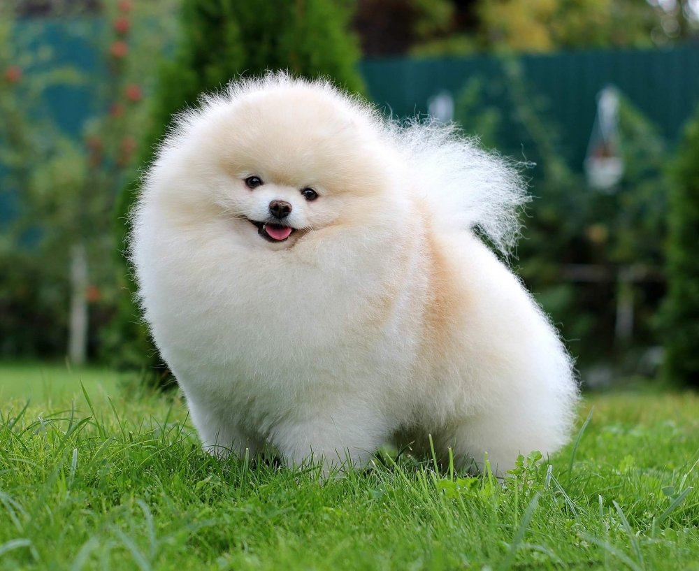

Померанский шпиц (померан) — порода собак, относящаяся к категории "Шпицы и породы примитивного типа"
У померана мягкая набивная "ватная" шерсть, короткая морда и пушистый лоб. Кроме того, при ежедневном расчёсывании
помераныредко линяют. Чаще всего встречаются помераны с рыжей шерстью.
